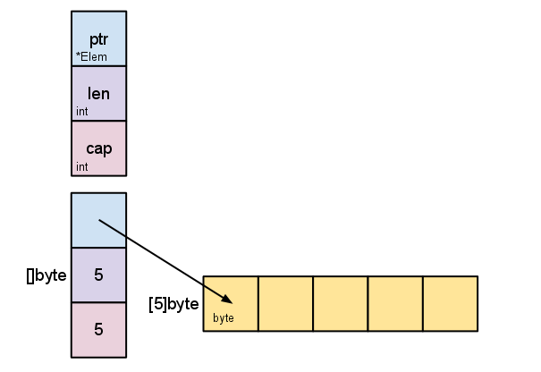

golang 的引用类型和内置类型变量
golang 中变量类型分为引用类型和值类型(也叫作内置类型)
1.值类型：变量直接存储值，内存通常在栈中分配。
值类型：基本数据类型int、float、bool、string以及数组和struct
2.引用类型：变量存储的是一个地址，这个地址存储最终的值。内存通常在 堆上分配。通过GC回收。
引用类型：指针、slice、map、chan等都是引用类型。这类型变量需要通过make构造
golang中函数传参只有一种方式
golang中函数传递参数，只有值传递一种，也就是实参内容按照值copy方式传递给形参。
当函数的形参变量类型为指针,slice,map,chan等类型时，虽然实参和形参地址不同，但是内部指向了同一个地址，所以可以达到修改指定空间数据的目的。
不要着急，接下来我会写一写小demo帮助大家理解。
数组
先把这段代码写一遍看看结果
1 | //数组声明方法 |
上边提供了数组的声明方式 var 数组名 [数组长度] 元素类型，
同时给出了两种数组遍历方式：
1 len(数组名) 可以获取数组大小，然后遍历
2 采用range遍历，第一个返回值是索引，第二个返回值是对应的内容
int 类型数组初始值为0，指针类型数组初始值为nil
结果如下:
1 | [0 0 0 0 0 0 0 0] |
前文说过数组是值类型变量，我们写个函数，在函数内部修改形参数组的变量内容，看是否会对实参影响
1 | func modify(array [5]int) { |
结果如下
1 | In modify(), array values: [200 2 3 4 5] |
说明实参没有被函数修改。那么既然golang传递变量的方式都是值传递，是不是就没办法通过函数修改外部变量了呢？
肯定不是的，可以通过引用类型变量修改，比如指针，slice，map，chan等都可以在函数体内修改，从而影响外部实参的内容。
下面通过slice说明这一点
slice切片
先看代码
1 | array := [5]int{1, 2, 3, 4, 5} |
生成切片有三种方式
1 通过数组或者切片截取生成新的切片
2 通过make生成 如mkslice := make([]int, 5)
3 直接初始化 如mkslice3 := []int{1, 2, 3, 4, 5}
切片遍历和数组遍历类似，上面结果如下
1 | Elements of array |
获取切片大小和容量
1 | //获取size和capacity |
获取大小采用len,获取实际开辟的容量用cap
切片添加和删除
1 | //末尾添加三个元素 |
采用append 方式可以添加切片数据，但是要注意将append赋值给要存储结果的slice
append有两种用法，第一种是多个参数，第一个参数是slice，后边是要加的多个元素。
第二种是第一个参数为slice，第二个参数为slice展开，slice…表示把slice中元素一个个展开加入。
切片的删除较为麻烦，比如说删除第n个元素，就是截取n-1之前的序列和n之后的序列进行拼接。
1 | mkslice4 := make([]int, 0) |
切片的copy
copy函数提供了切片的深层复制，而赋值操作(=)紧紧是浅拷贝。
看看赋值操作，我们修改slice内部元素数据，其他slice是否会受到影响
1 | oldslice := []int{1, 2, 3, 4, 5} |
输出一下
1 | newslice is : [1 2 3] |
可以看到oldslice修改后，newslice和newslice2都受到影响了，即便他们地址不同。
为什么呢?这要追溯到slice内部实现
1 | type Slice struct { |
Slice 内部其实存放了一个指针ptr，这个ptr指向的地址就是存放数据连续空间的首地址，len表示空间当前长度，cap表示空间实际开辟了多大。
如下图

那如何深copy元素到另一个slice呢？就是copy函数了
1 | slice1 := []int{1, 2, 3, 4, 5} |
结果如下
1 | after copy..... |
可以看到copy(destslice,srcslice)，当destslice 大小< srcslice时，只拷贝destslice大小的数据。
也就是说copy的大小取决于destslice和srcslice最小值
另外copy后，修改slice2元素，slice1也不会受到影响，是深copy。
感谢关注我的公众号